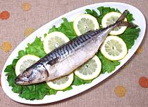
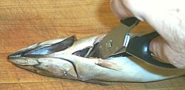
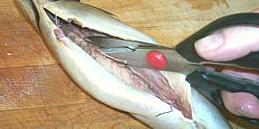
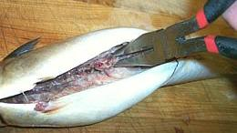
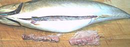
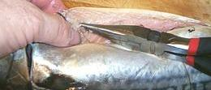
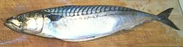
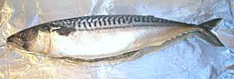
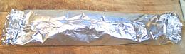

Serve in whatever manner you wish but accompany with plenty of lemon wedges
for squeezing on the fish or with some
Lemon Butter Sauce (but don't drown it, just a little will do).
Serve in whatever manner you wish but accompany with plenty of lemon wedges
for squeezing on the fish or with some
Lemon Butter Sauce (but don't drown it, just a little will do).

|
Stuffed Baked MackerelEuro/American | ||||
| Serves: Effort: Sched: DoAhead: |
2 main *** 1 hr Some |
You can serve this tasty mackerel as an appetizer, as a side, or as a main dish with rice. Give the first section behind the head to an experienced fish eater because it'll have the root bones of the fins in it. Mackerel is very perishable so don't keep it long in the fridge before cooking. It's loaded with Omega 3, but it's a little oily - a fish for people who like fish. | |||
|
|
1 ------ 2 2-1/2 1/2 3 1/2 1/2 1/4 1/3 1/4 ------ |
# --- oz T T T t T t c t --- |
Mackerel, whole (1) -- Stuffing Onion Butter Oatmeal (2) Breadcrumbs, wheat (3) Thyme dry Parsley, flatleaf Pepper Water Salt -- Serve with Lemon Wedges |
|
Clean the fish per method on our page Cleaning and Filleting Round Fish, then with your kitchen shears cut the fin off the top.

With your kitchen shears cut the backbone as far forward in the cavity as
you can, then do the same as far back as possible and once in the middle.
Be careful not to go through the top of the fish. Actually, you can make
a cut on both sides of the anal fin and go a bit farther back than the
end of the body cavity.

Mackerel is quite tender so cut the ribs off both sides of the backbone.
If you rip the backbone out ribs and all like you can on some fish you
may tear up the flesh too much.

Pull out the backbone with a strong pair of pliers. You will probably
want to use your fingers on both sides to keep it from pulling out any
flesh.

The backbone should come out with very little flesh attached.

Now go in and feel around with your fingers to find all the bones and pull
them out (lengthwise towards the center wherever possible) while holding the
flesh back with your fingers so it doesn't tear. In particular, check for
small bones up at the head end.

Your fish is now ready to stuff.

Brush an ample sheet of aluminum foil with olive oil. Brush the fish with
olive oil as well. Put in as much of the stuffing as it will comfortably
hold.

Wrap the foil to seal as well as possible at top and both ends. Put in a
preheated oven and bake at 375°F/190°C for 1/2 hour.
Serve in whatever manner you wish but accompany with plenty of lemon wedges
for squeezing on the fish or with some
Lemon Butter Sauce (but don't drown it, just a little will do).